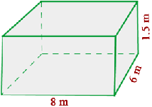
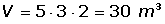
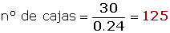
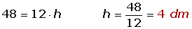
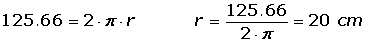
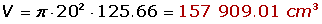
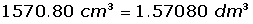
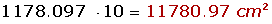
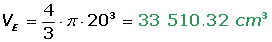

Ejercicios y problemas resueltos de áreas y volúmenes
Problemas de áreas y volúmenes
1 Calcula el volumen, en centímetros cúbicos, de una habitación que tiene 5 m de largo, 40 dm de ancho y 2500 mm de alto.
2 Una piscina tiene 8 m de largo, 6 m de ancho y 1.5 m de profundidad. Se pinta la piscina a razón de 6 € el metro cuadrado.
1 Cuánto costará pintarla.
2 Cuántos litros de agua serán necesarios para llenarla.
3 En un almacén de dimensiones 5 m de largo, 3 m de ancho y 2 m de alto queremos almacenar cajas de dimensiones 10 dm de largo, 6 dm de ancho y 4 dm de alto. ¿Cuantas cajas podremos almacenar?
5 Calcula la altura de un prisma que tiene como área de la base 12 dm2 y 48 l de capacidad.
6 Calcula la cantidad de hojalata que se necesitará para hacer 10 botes de forma cilíndrica de 10 cm de diámetro y 20 cm de altura.
7 Un cilindro tiene por altura la misma longitud que la circunferencia de la base. Y la altura mide 125.66 cm. Calcular:
1 El área total.
2 El volumen.
8 En una probeta de 6 cm de radio se echan cuatro cubitos de hielo de 4 cm de arista. ¿A qué altura llegará el agua cuando se derritan?
9 La cúpula de una catedral tiene forma semiesférica, de radio 50 m. Si restaurarla tiene un coste de 300 € el m2, ¿A cuánto ascenderá el presupuesto de la restauración?
10 ¿Cuántas losetas cuadradas de 20 cm de lado se necesitan para recubrir las caras de una piscina de 10 m de largo por 6 m de ancho y de 3 m de profundidad?
11 Un recipiente cilíndrico de 10 cm de radio y 5 cm de altura se llena de agua. Si la masa del recipiente lleno es de 2 kg, ¿cuál es la masa del recipiente vacío?
12 Para una fiesta, Luís ha hecho 10 gorros de forma cónica con cartón. ¿Cuánto cartón habrá utilizado si las dimensiones del gorro son 15 cm de radio y 25 cm de generatriz?
13 Un cubo de 20 cm de arista está lleno de agua. ¿Cabría esta agua en una esfera de 20 cm de radio?
- 1
- 2
- 3
- 4
- 5
- 6
- 7
- 8
- 9
- 10
- 11
- 12
- 13
Ejercicio 1 resuelto
Calcula el volumen, en centímetros cúbicos, de una habitación que tiene 5 m de largo, 40 dm de ancho y 2500 mm de alto.
Ejercicio 2 resuelto
Una piscina tiene 8 m de largo, 6 m de ancho y 1.5 m de profundidad. Se pinta la piscina a razón de 6 € el metro cuadrado.
1 Cuánto costará pintarla: 540 €
2 Cuántos litros de agua serán necesarios para llenarla: 72 000 l
Ejercicio 3 resuelto
En un almacén de dimensiones 5 m de largo, 3 m de ancho y 2 m de alto queremos almacenar cajas de dimensiones 10 dm de largo, 6 dm de ancho y 4 dm de alto. ¿Cuantas cajas podremos almacenar?


Ejercicio 4 resuelto
Determina el área total de un tetraedro, un octaedro y un icosaedro de 5 cm de arista.
Ejercicio 5 resuelto
Calcula la altura de un prisma que tiene como área de la base 12 dm2 y 48 l de capacidad.

Ejercicio 6 resuelto
Calcula la cantidad de hojalata que se necesitará para hacer 10 botes de forma cilíndrica de 10 cm de diámetro y 20 cm de altura.
Ejercicio 7 resuelto
Un cilindro tiene por altura la misma longitud que la circunferencia de la base. Y la altura mide 125.66 cm. Calcular:
1 El área total: 18 304 cm2
2 El volumen: 157 909.01 cm3

Ejercicio 8 resuelto
En una probeta de 6 cm de radio se echan cuatro cubitos de hielo de 4 cm de arista. ¿A qué altura llegará el agua cuando se derritan?
Ejercicio 9 resuelto
La cúpula de una catedral tiene forma semiesférica, de radio 50 m. Si restaurarla tiene un coste de 300 € el m2, ¿A cuánto ascenderá el presupuesto de la restauración?
Ejercicio 10 resuelto
¿Cuántas losetas cuadradas de 20 cm de lado se necesitan para recubrir las caras de una piscina de 10 m de largo por 6 m de ancho y de 3 m de profundidad?
Ejercicio 11 resuelto
Un recipiente cilíndrico de 10 cm de radio y 5 cm de altura se llena de agua. Si la masa del recipiente lleno es de 2 kg, ¿cuál es la masa del recipiente vacío?

Ejercicio 12 resuelto
Para una fiesta, Luís ha hecho 10 gorros de forma cónica con cartón. ¿Cuánto cartón habrá utilizado si las dimensiones del gorro son 15 cm de radio y 25 cm de generatriz?

Ejercicio 13 resuelto
Un cubo de 20 cm de arista está lleno de agua. ¿Cabría esta agua en una esfera de 20 cm de radio?

 Ejercicios
Ejercicios